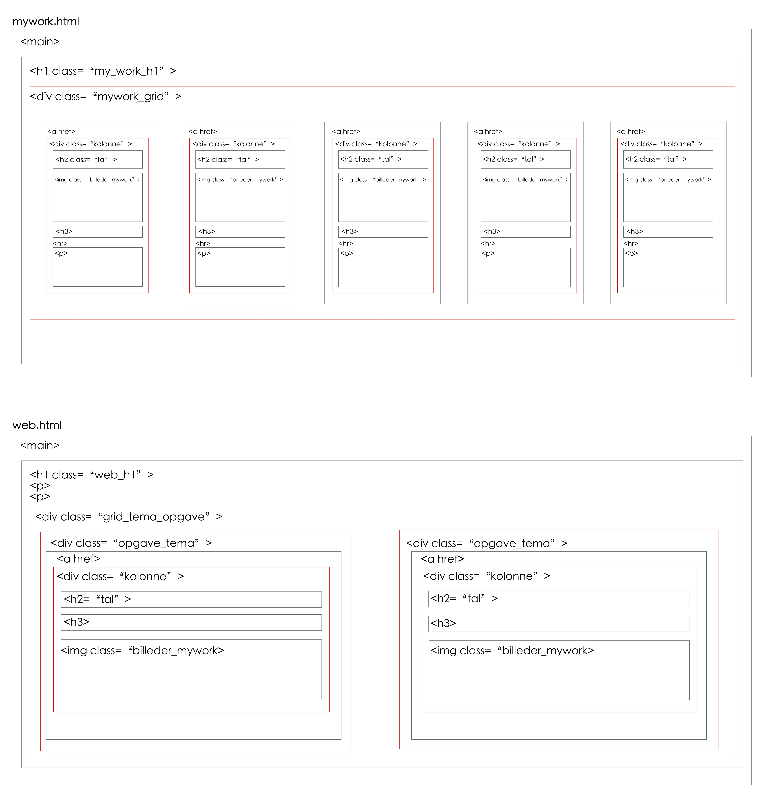
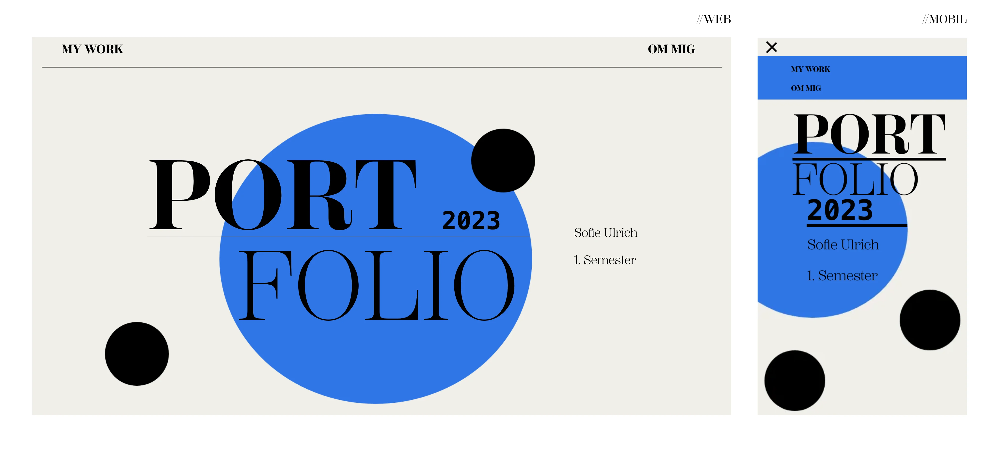

PORT/FOLIO
På 1. semesters sidste tema, som er vores eksamens opgave, skulle vi kreere et portfolio website, med henblik på at præsentere de opgaver vi har arbejdet med i løbet af semesteret. Portfolio sitet skal benyttes til at demonstrere, at læringsmålene for semesteret er blevet opfyldt, og slutter af med en mundtlig eksamenspræsentation.
Sitemap
Jeg startede med at planlægge hvilken struktur, der skulle være på mit portfolio site. Det gjorde jeg ved hjælp af et sitemap, for at danne mig et overblik over navigationen imellem de forskellige sider, med henblik på at gøre det så brugervenligt som muligt.
Det var vigtigt for mig at det skulle være overskueligt at navigere rundt imellem de forskellige tema opgaver. Min "My Work" side, giver en oversigt over de forskellige temaer, fra tema 2-6. Til at starte med havde jeg bare lavet en side for hvert tema, med de dertilhørende opgaver, men på de temaer hvor der var to opgaver, blev det en smule uoverskueligt og langtrukkent med meget tekst, og opgaverne var blot opdelt med en vandret streg. Jeg valgte derfor ydermere at lave en ekstra navigations side til tema 2 og tema 5, så man kunne vælge den specifikke opgave, man vil ind og se på.
Moodboard og styletile i XD
Min designproces, startede med at jeg lavede nogle forskellige moodboards i Adobe XD, med inspiration til farver og layout opsætning. De forskellige moodboards, samlede jeg til et fælles moodboard, med nogle af de elementer jeg gerne ville inkorporere på sitet; heriblandt de runde former, den blå farve til "pop of color", min font til overskrifterne og den vandrette skillelinje.
Jeg ville gerne lave en minimalistisk, modernistisk website, som havde et feminint og harmonisk udtryk. Layoutet skulle være nemt og overskueligt, og jeg har benyttet mig af gestaltlove, for at skabe et sammenhængende layout på mit site.
Efter jeg lavede mit endelige moodboard, lavede jeg et styletile, for at have nogle retningslinjer i forhold til mit design. Jeg har valgt at benytte mig af få farver på mit site; den beige baggrundsfarve, de sorte overskrifter og til sidst den blå farve på forsiden, og til hover effekten på mine links. Der skulle ikke være for mange forstyrrende elementer i form af en kæmpe farvepalette, da jeg gerne ville have at hovedfokus i mit portfolio var på billeder og dertilhørende tekst. Derudover har jeg valgt at billederne på mine tema-/ og opgave navigationssider skulle have et sort/hvid filter, for bidrage til det minimalistiske udtryk, så layoutet ikke clashede med de mange forskellige farver; jeg har dog givet billederne en hover effekt, så man kan også kan se original farverne.
Layoutdiagrammer
Da jeg skulle udvikle mit portfolio sites layout, startede jeg med at lave layoutdiagrammer for mine sider. Jeg har lavet layout diagrammer til "mywork.html" siden, tema siderne (her "web.html", da denne og indhold.html, skulle se ens ud), samt "emnesite.html". Alle opgave sidernes layout er næsten ens, med få afvigelser, men de tager alle sammen udgangspunkt i layoutdiagrammet til emnesite.html. Mine opgave sider er bygget op af 2 grids, med tekst/billede, billede/tekst på web, og på mobil billede/tekst/billede/tekst; det assymetriske layout, er med til at skabe en symmetri på siden, så der ikke kun er tekst i den ene side, og billeder i den anden, men i stedet for en afveksling, der er med til at gøre sitet mere harmonisk.
Media Queries
Jeg startede med at kode mit portfolio til web, og har sidenhen benyttet mig af "Media Queries" i CSS, for at gøre mit website responsivt.
